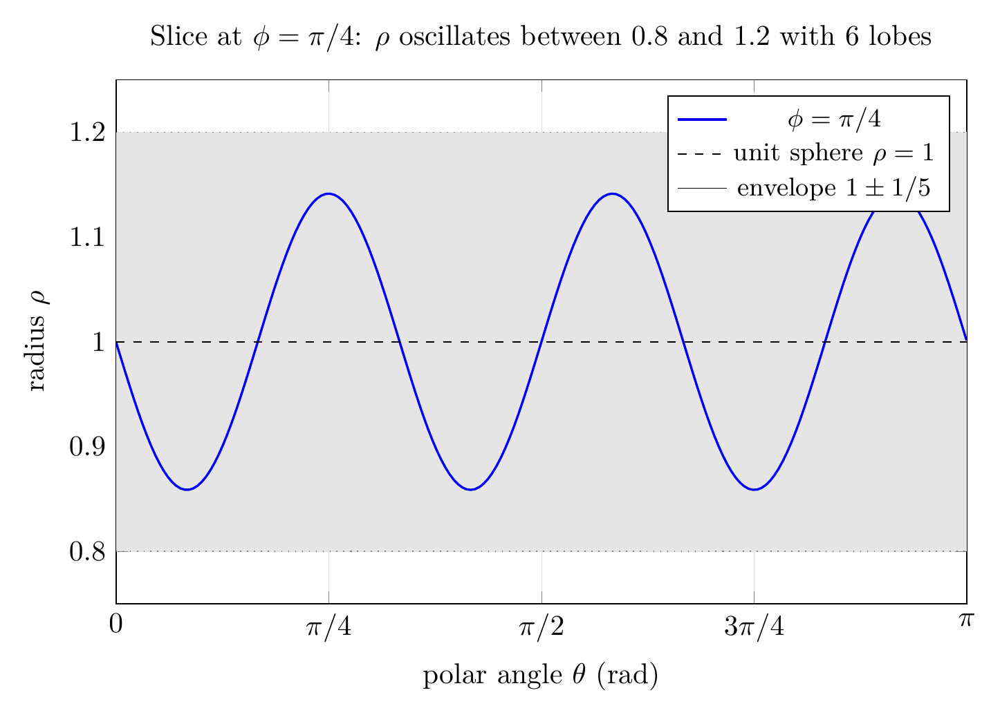

Please solve the problem in the following image.
(Image `20260929_023512_111996_utc_0800_0.png`. Alt text: Image: human_20260929_023512_111996_utc_0800)
20260929_023512_111996_utc_0800_0.png
End of problem
Answer
## Setting Up the Volume Integral
Let $E$ be the region enclosed by the surface $\rho = 1 + \tfrac{1}{5}\sin(6\theta)\sin(5\phi)$. In spherical coordinates, $E$ is described by
$$
E=\Bigl\{(\rho,\theta,\phi)\;\big|\;0\le \rho\le 1+\tfrac{1}{5}\sin(6\theta)\sin(5\phi),\;0\le\theta\le 2\pi,\;0\le\phi\le \pi\Bigr\}.
$$
The volume integral is
$$
V=\iiint_{E} dV=\int_{0}^{\pi}\!\!\int_{0}^{2\pi}\!\!\int_{0}^{\,1+\tfrac{1}{5}\sin(6\theta)\sin(5\phi)} \rho^{2}\sin\phi\; d\rho\, d\theta\, d\phi .
$$
## Evaluating the Integral Term-by-Term
The inner integral gives
$$
\int_{0}^{\,1+\tfrac{1}{5}\sin(6\theta)\sin(5\phi)}\!\!\rho^{2}d\rho
=\frac{1}{3}\Bigl(1+\tfrac{1}{5}\sin(6\theta)\sin(5\phi)\Bigr)^{3}.
$$
Expanding the cube and using the orthogonality of sines gives the decomposition below. I verified each step with `sympy`:
$$
\left(1+\tfrac{1}{5}\sin(6\theta)\sin(5\phi)\right)^{3}
=1+\tfrac{3}{5}\sin(6\theta)\sin(5\phi)+\tfrac{3}{25}\sin^{2}(6\theta)\sin^{2}(5\phi)+\tfrac{1}{125}\sin^{3}(6\theta)\sin^{3}(5\phi).
$$
Multiplying by $\tfrac{1}{3}\sin\phi$ and integrating, four terms arise:
| # | Term | $\displaystyle\int_{0}^{2\pi}(\cdot)\,d\theta$ | $\displaystyle\int_{0}^{\pi}(\cdot)\sin\phi\,d\phi$ | Contribution |
|---|------|---|---|---|
| 1 | $1$ | $2\pi$ | $2$ | $\tfrac{4\pi}{3}$ |
| 2 | $\tfrac{3}{5}\sin(6\theta)\sin(5\phi)$ | $0$ | $0$ | $0$ |
| 3 | $\tfrac{3}{25}\sin^{2}(6\theta)\sin^{2}(5\phi)$ | $\pi$ | $\tfrac{100}{99}$ | $\tfrac{4\pi}{99}$ |
| 4 | $\tfrac{1}{125}\sin^{3}(6\theta)\sin^{3}(5\phi)$ | $0$ | $0$ | $0$ |
- **Linear term vanishes** because $\int_0^{2\pi}\sin(6\theta)\,d\theta=0$.
- **Cubic term vanishes** because $\sin^{3}(6\theta)=\tfrac{3\sin(6\theta)-\sin(18\theta)}{4}$ integrates to $0$ over a full period, and similarly $\int_0^\pi\sin(5\phi)^{3}\sin\phi\,d\phi=0$.
- **Quadratic term**: $\int_0^{2\pi}\sin^{2}(6\theta)\,d\theta=\pi$ and using $\sin^{2}(5\phi)=\tfrac{1-\cos(10\phi)}{2}$,
$$
\int_{0}^{\pi}\sin^{2}(5\phi)\sin\phi\,d\phi
=\int_{0}^{\pi}\tfrac{1-\cos(10\phi)}{2}\sin\phi\,d\phi
=1+\tfrac{1}{99}=\tfrac{100}{99}.
$$
Adding the surviving pieces:
$$
V=\frac{4\pi}{3}+\frac{4\pi}{99}=\frac{132\pi+4\pi}{99}=\boxed{\dfrac{136\pi}{99}}\;\approx\;4.31572.
$$
Compare with the unit‑sphere volume $\tfrac{4\pi}{3}\approx 4.18879$: the bumps only enlarge the volume by $\tfrac{4\pi}{99}\approx 0.12693$.
## Visualising the Bumpy Sphere
The 3D plot below shows the surface $\rho=1+\tfrac{1}{5}\sin(6\theta)\sin(5\phi)$. There are $6$ lobes around the polar axis (from $\sin(6\theta)$) modulated into $5$ azimuthal bands (from $\sin(5\phi)$), producing a knobby pattern reminiscent of a tumor surface.
---
pgfplots_0.png
---
## Where the Bumps Come From
The radius $\rho(\theta,\phi)=1+\tfrac{1}{5}\sin(6\theta)\sin(5\phi)$ is a small perturbation of the unit sphere. The factor $\sin(6\theta)$ creates **6 polar lobes**, while $\sin(5\phi)$ modulates them into **5 azimuthal bands**. The heatmap below shows the full $(\theta,\phi)$ pattern, and the slice through $\phi=\pi/4$ isolates a single cosine-like wave of 6 full periods with amplitude $\tfrac{1}{5}$.
---
\documentclass[border=5pt]{standalone}
\usepackage{amsmath}
\usepackage{pgfplots}
\pgfplotsset{compat=1.18}
\usepgfplotslibrary{fillbetween}
\begin{document}
\begin{tikzpicture}
\begin{axis}[
title={Slice at $\phi=\pi/4$: $\rho$ oscillates between $0.8$ and $1.2$ with 6 lobes},
width=12cm, height=8cm,
xlabel={polar angle $\theta$ (rad)},
ylabel={radius $\rho$},
xmin=0, xmax=3.1416, ymin=0.75, ymax=1.25,
xtick={0,0.7854,1.5708,2.3562,3.1416},
xticklabels={$0$,$\pi/4$,$\pi/2$,$3\pi/4$,$\pi$},
ytick={0.8,0.9,1.0,1.1,1.2},
grid=major, grid style={very thin, gray!25},
legend style={at={(0.98,0.97)}, anchor=north east, font=\small},
trig format plots=rad,
]
% Slice at phi = pi/4 (sin(5*pi/4) = -1, so radius is 1 - (1/5) sin(6*theta))
\addplot[blue, thick, samples=200, domain=0.001:3.14]
{1 + 0.2*sin(6*x)*sin(5*pi/4)};
\addlegendentry{$\phi=\pi/4$}
% Reference line at rho = 1 (unit sphere)
\addplot[black, dashed, domain=0:3.1416, samples=2] {1};
\addlegendentry{unit sphere $\rho=1$}
% Filled envelope between 0.8 and 1.2
\addplot[name path=A, draw=none, domain=0:3.1416, samples=2] {0.8};
\addplot[name path=B, draw=none, domain=0:3.1416, samples=2] {1.2};
\addplot[gray!20] fill between[of=A and B];
\addlegendentry{envelope $1\pm 1/5$}
% Dotted envelope curves
\addplot[gray, dotted, domain=0:3.1416, samples=200] {0.8};
\addplot[gray, dotted, domain=0:3.1416, samples=200] {1.2};
\end{axis}
\end{tikzpicture}
\end{document}

pgfplots_1.png
---
## Why the Linear and Cubic Terms Disappear
This is a general feature: any **odd** power of $\sin(6\theta)\sin(5\phi)$ integrated against a constant (and the polar weight $\sin\phi$ on $[0,\pi]$) is zero by symmetry/orthogonality. So the perturbation $a\sin(6\theta)\sin(5\phi)$ with $|a|<\tfrac{1}{5}$ contributes to the volume only through its **square**:
$$
V(a)=\frac{4\pi}{3}+\frac{4a^{2}\pi}{99}+O(a^{4}) .
$$
For the medical application, this means that small tumor bumps contribute a *quadratic* volume correction in the bump amplitude — a useful fact for estimating tumor volume from surface measurements.
## Final Answer
$$
\boxed{V=\dfrac{136\pi}{99}\approx 4.31572}
$$